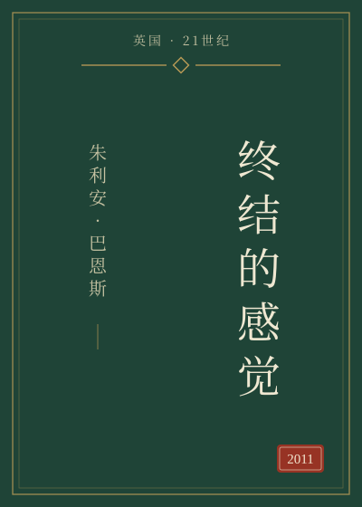
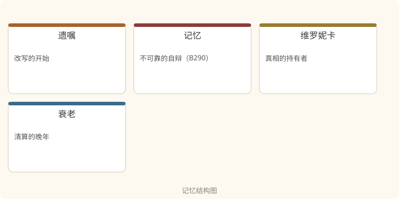

终结的感觉
一、基本信息
| 作者 | 朱利安·巴恩斯 |
|---|---|
| 成书/出版 | 2011年（作者页B290口径：2011年布克奖——'a Booker Prize-winning novel that uses an unreliable narrator to explore the subjects of memory and aging'） Julian Barnes — Encyclopaedia Britannica（百科全书） |
| 国别/地区 | 英国 |
| 时代 | 现当代 · 21世纪 |
| 体裁 | 中篇小说 |
| 语言 | 英语 |

记忆结构图（主题·结构图）
二、创作背景
作者页（B290）：巴恩斯 major_works 载'终结的感觉'（B290 作者页定位，详见 fuloubaideyingwu 条核对）。
Britannica（B290）：2011年布克奖——'a Booker Prize-winning novel that uses an unreliable narrator to explore the subjects of memory and aging'（以不可靠叙述者探察记忆与衰老——B290）。
作者（B290）：'inventive and intellectual novels about obsessed characters curious about the past'。
三、内容脉络
退休律师托尼的回忆被一封遗嘱与一封信改写（通说待核）。
'不可靠的记忆'：自我辩护的崩塌（通说待核）。
四、主要人物表
| 人物 | 身份 | 说明 |
|---|---|---|
| 托尼 | 退休律师 | 不可靠叙述者（B290） |
| 维罗妮卡 | 前女友 | （通说待核） |
五、主题与艺术特点
- 记忆的不可靠（B290）。
- 衰老与清算（B290：memory and aging）。
- '终结的感觉'：历史的追索（书名通说待核）。
六、影响与评论
- Britannica：2011年布克奖——不可靠叙述者探察记忆与衰老（B290）。
Julian Barnes — Encyclopaedia Britannica（百科全书） - Britannica：2017年电影改编（B290 语境）。
Julian Barnes — Encyclopaedia Britannica（百科全书）
七、阅读建议
难点
- 上下两部（第一/第二部分）结构。
- 不可靠叙述的细节。
- 《终结的感觉》（译林出版社，通说待核）。
- 英文原版。
先《福楼拜的鹦鹉》后本作。
八、待核实
- 2011年出版（Jonathan Cape说）核对。
- 托尼/维罗妮卡人名核对。
- 2017年电影（Ritesh Batra说）待核。
本页主要来源
朱利安·巴恩斯的其他收录作品：福楼拜的鹦鹉